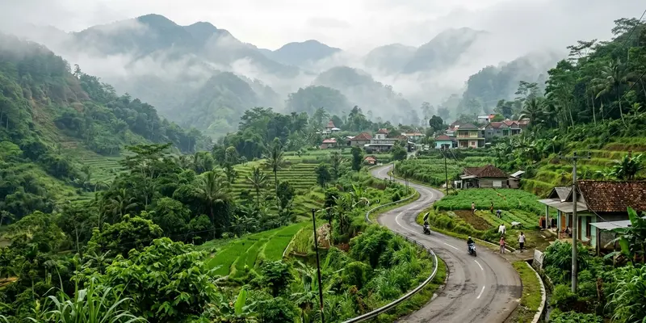

Mikutopia Batu Malang berlokasi di Dusun Junggo, Desa Tulungrejo, Kecamatan Bumiaji, Kota Batu, Jawa Timur, tidak jauh dari kawasan wisata Cangar dan lereng Gunung Arjuno. Artikel ini membahas rute, akses, dan tips perjalanan menuju lokasi tersebut.
Ringkasan Inti
- Lokasi berada di kawasan Bumiaji yang beriklim sejuk dan berkontur perbukitan.
- Akses menuju lokasi melewati jalan desa yang pernah dilaporkan padat saat kunjungan melonjak.
- Kajian dampak lalu lintas atau Andalalin sempat direkomendasikan untuk pelebaran jembatan dan jalan akses.
- Wisatawan disarankan datang lebih awal dan mempersiapkan waktu tempuh tambahan.
Di Mana Tepatnya Lokasi Mikutopia Batu Malang?
Lokasi Mikutopia Batu Malang berada di Dusun Junggo, Desa Tulungrejo, Kecamatan Bumiaji, Kota Batu, sebuah kawasan perbukitan di lereng Gunung Arjuno yang dikenal sejuk dan sering diselimuti kabut. Kawasan ini juga berdekatan dengan destinasi wisata Cangar.
Menurut laporan Malang Posco Media, kawasan Desa Tulungrejo termasuk wilayah yang menjadi bagian penting dari kawasan hulu Malang Raya, sehingga aspek tata ruang dan lingkungan di sekitar lokasi wisata menjadi perhatian instansi terkait.
Bagaimana Rute Menuju Mikutopia dari Kota Malang?
Rute menuju Mikutopia dari pusat Kota Malang umumnya mengarah ke Kota Batu terlebih dahulu, kemudian dilanjutkan menuju Kecamatan Bumiaji melewati jalur menuju kawasan Cangar. Perjalanan melewati jalan pegunungan dengan tanjakan dan tikungan khas daerah lereng gunung.
Karena akses menuju lokasi melewati jalan desa berskala lebih kecil dibanding jalan utama kota, penting untuk memperhitungkan waktu tempuh tambahan, terutama saat akhir pekan atau musim liburan ketika volume kendaraan meningkat.
Apa Kondisi Akses Jalan Menuju Mikutopia?
Kondisi akses jalan menuju Mikutopia sempat menjadi perhatian karena adanya rekomendasi Andalalin atau Analisis Dampak Lalu Lintas terkait pelebaran jembatan dan peningkatan kapasitas jalan di sekitar lokasi. Menurut laporan Malang Posco Media edisi 6 April 2026, rekomendasi tersebut belum sepenuhnya ditindaklanjuti, yang menimbulkan kekhawatiran warga desa sekitar terhadap potensi kemacetan.
Situasi ini membuat wisatawan perlu bersiap menghadapi kemungkinan antrean kendaraan di jalur akses, khususnya pada momen kunjungan tinggi seperti akhir pekan atau hari libur nasional.

Suasana jalur pedesaan lereng perbukitan di Bumiaji yang asri dan sejuk menuju kawasan wisata Mikutopia.
Apa Saja Tips Perjalanan ke Mikutopia Batu Malang?
Tips utama saat menuju Mikutopia Batu Malang adalah berangkat pagi hari, menggunakan kendaraan yang sesuai dengan medan pegunungan, dan mempersiapkan pakaian hangat karena suhu di kawasan Bumiaji cenderung sejuk hingga dingin.
Beberapa hal praktis yang perlu diperhatikan pengunjung:
- Cek kondisi cuaca dan kabut sebelum berangkat, terutama pada pagi hari.
- Gunakan alas kaki tertutup yang nyaman untuk medan berkontur.
- Alokasikan waktu tempuh lebih lama saat akhir pekan atau musim liburan.
- Pastikan bahan bakar kendaraan cukup karena rute melewati jalur pegunungan dengan minim fasilitas di beberapa titik.
Kesimpulan
Mikutopia Batu Malang berlokasi di Desa Tulungrejo, Kecamatan Bumiaji, dengan akses melewati jalur menuju kawasan Cangar yang berkontur perbukitan. Wisatawan disarankan mempersiapkan waktu perjalanan lebih panjang dan memeriksa kondisi akses jalan sebelum berangkat. Jangan lewatkan juga ulasan lengkap mengenai Mikutopia Batu dan fakta sorotannya serta profil wisata negeri jamur Mikutopia.
FAQ Seputar Lokasi Mikutopia Batu Malang
Mikutopia berlokasi di Dusun Junggo, Desa Tulungrejo, Kecamatan Bumiaji, Kota Batu, Jawa Timur.
Waktu tempuh dapat bervariasi tergantung kondisi lalu lintas dan cuaca, sehingga disarankan berangkat lebih awal terutama saat akhir pekan.
Berdasarkan laporan resmi, masih ada rekomendasi peningkatan kapasitas jalan dan pelebaran jembatan yang belum sepenuhnya ditindaklanjuti, sehingga potensi kepadatan tetap perlu diantisipasi.